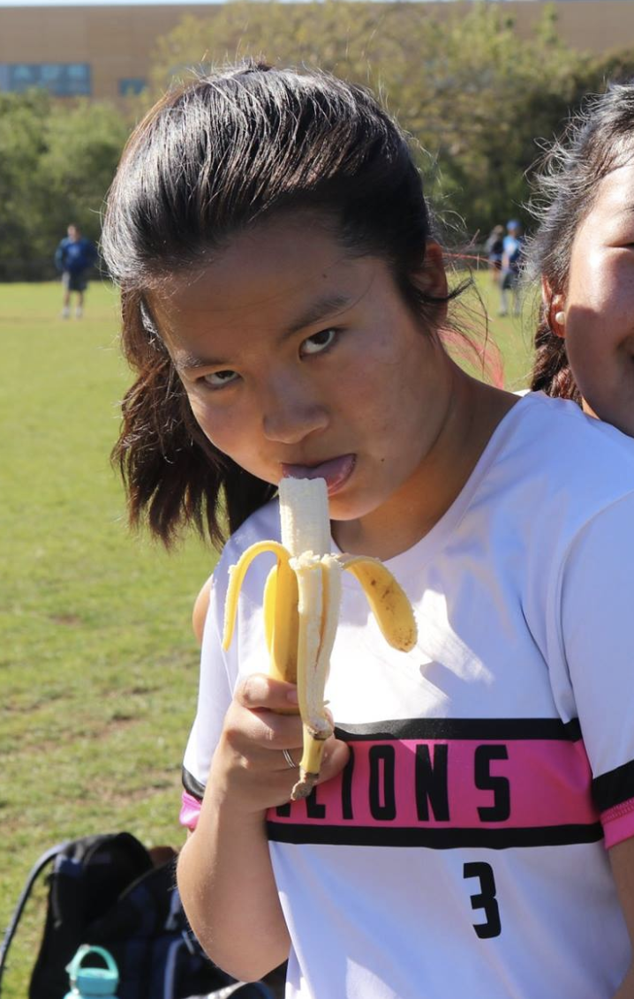
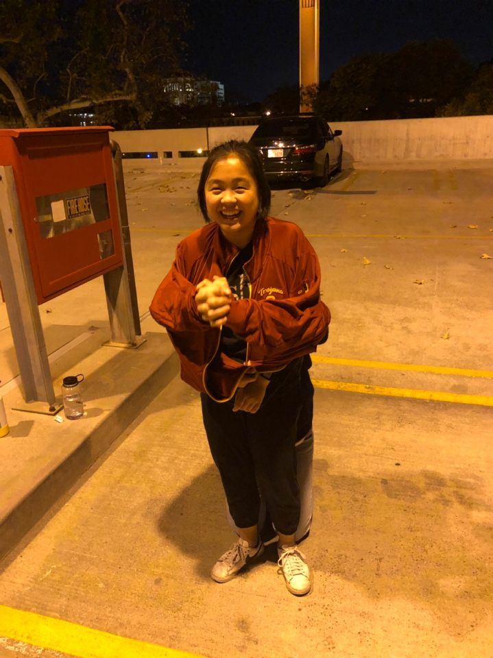
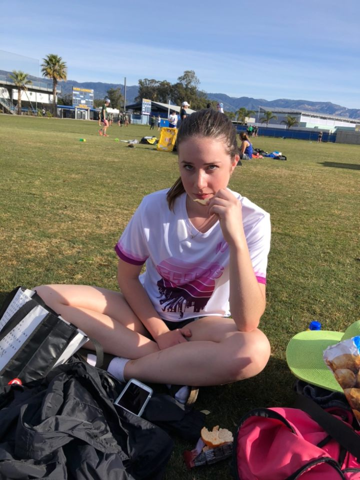
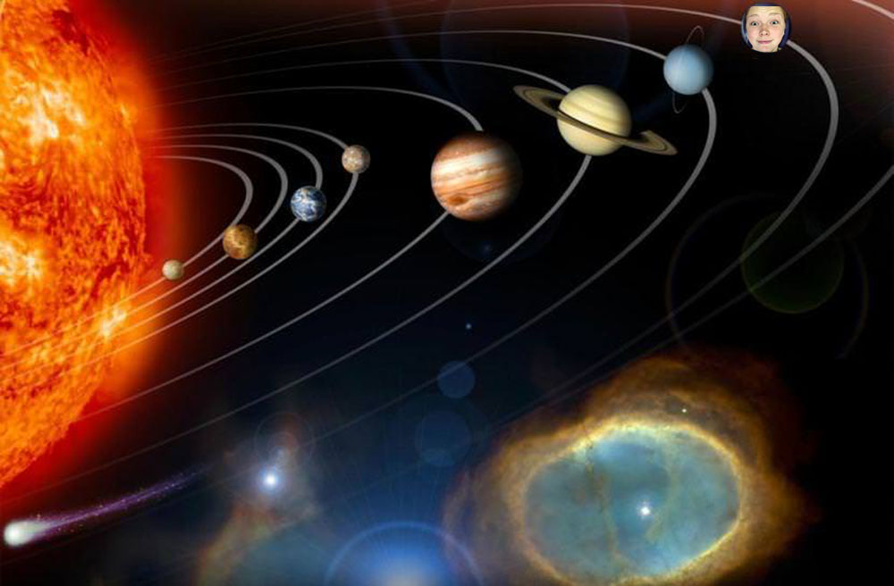
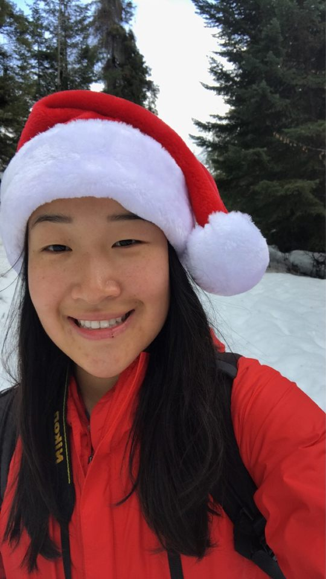
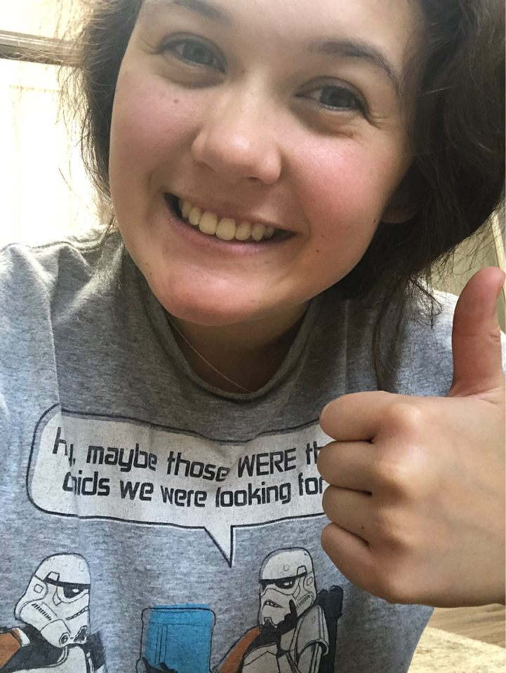
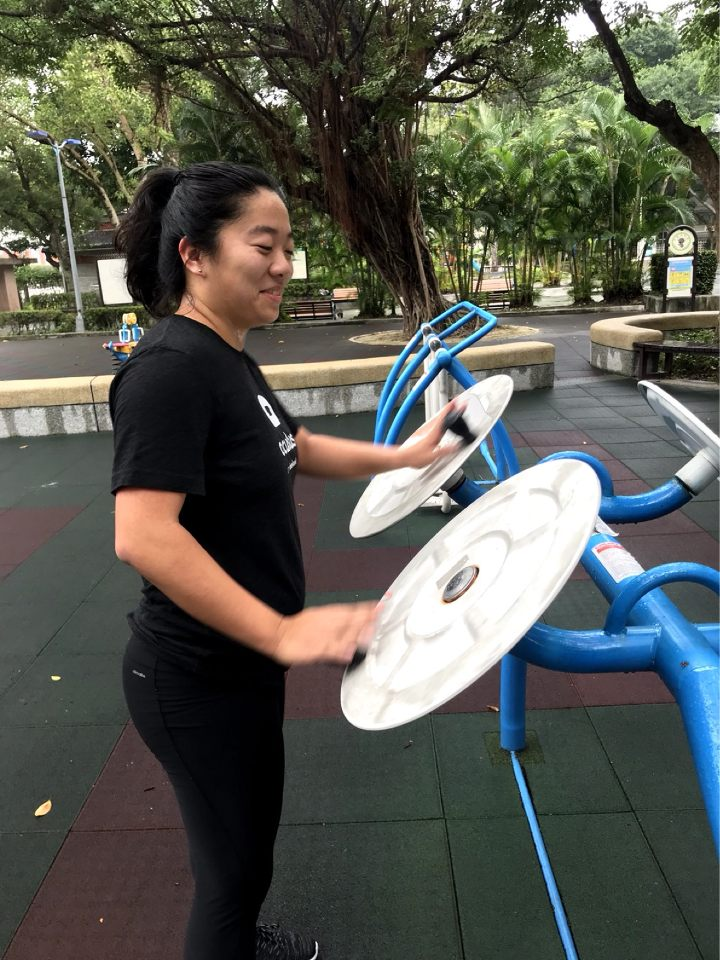
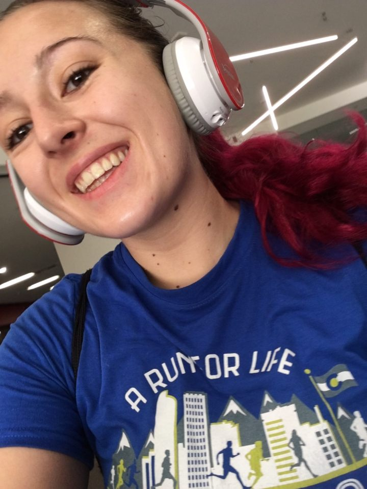
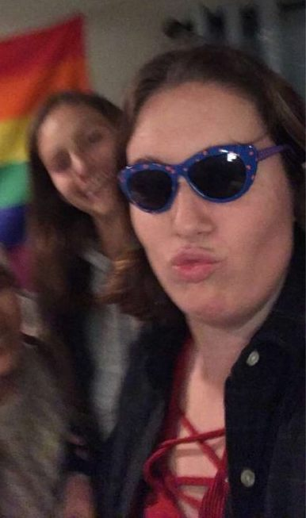
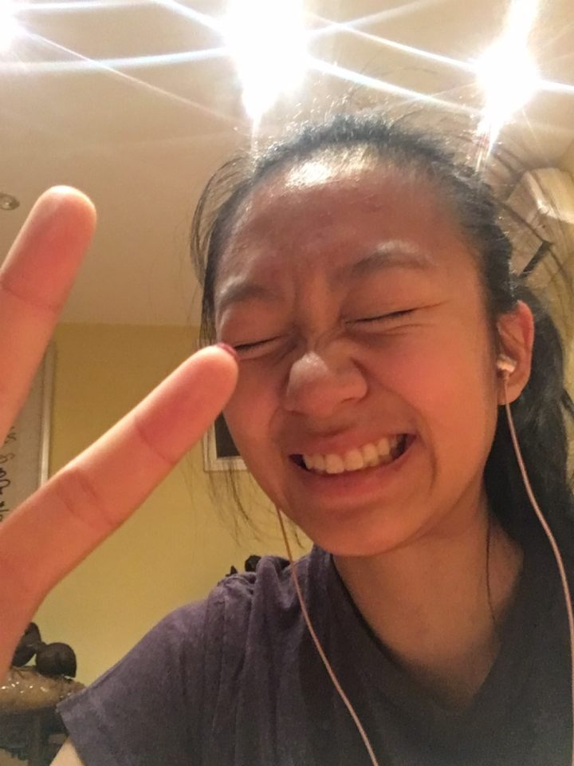

Major: Media Arts + Practice/Communication Design Minor
Hometown: Cross River, NY
Go-to pump up song: TUNAK TUNAK TUN
Post-Tournament Ritual: BIG eats.
Best tourney feeling is when... ur so sweaty but a surprise breeze gives you a little kiss
Favorite Chain Restaurant: The Cheesecake Factory
3 kids and no money or 3 money and no kids? 3 kids, make triple the moneys $$$
Jessica "Yoshi" Li (#3)
Year: SophomoreMajor: Media Arts + Practice/Communication Design Minor
Hometown: Cross River, NY
Go-to pump up song: TUNAK TUNAK TUN
Post-Tournament Ritual: BIG eats.
Best tourney feeling is when... ur so sweaty but a surprise breeze gives you a little kiss
Favorite Chain Restaurant: The Cheesecake Factory
3 kids and no money or 3 money and no kids? 3 kids, make triple the moneys $$$
Georgia "Squidward" Cardosa (#7)
Year: FreshmanMajor: Environmental Engineering
Hometown: Austin, TX
Go-to pump up song: Watch Me - Jaden Smith
Post-Tournament Ritual: I take off my damn cleats
Best tourney feeling is when... Squigel takes the field
Favorite Chain Restaurant: Taco Cabana
3 kids and no money or 3 money and no kids? 3 money no kids

Major: Business Administration and Asian-American Studies
Hometown: Pittsburgh, PA
Go-to pump up song: Ways To Go - Grouplove
Post-Tournament Ritual: naptime but forever.
Best tourney feeling is when... cheering with the team :)
Favorite Chain Restaurant: a gal loves Subway honestly
3 kids and no money or 3 money and no kids? $$$
Izzy "Flapjack" Becer (#8)
Year: FreshmanMajor: Business Administration and Asian-American Studies
Hometown: Pittsburgh, PA
Go-to pump up song: Ways To Go - Grouplove
Post-Tournament Ritual: naptime but forever.
Best tourney feeling is when... cheering with the team :)
Favorite Chain Restaurant: a gal loves Subway honestly
3 kids and no money or 3 money and no kids? $$$

Major: Mechanical Engineering
Hometown: Thousand Oaks, CA
Go-to pump up song: Don't Stop Believin' - Journey
Post-Tournament Ritual: getting FOOD
Best tourney feeling is when... you know you did your best and improved throughout the day
Favorite Chain Restaurant: Chick fil A
3 kids and no money or 3 money and no kids? 3 money and no kids
Jenna "Cosmo" Matus (#10)
Year: FreshmanMajor: Mechanical Engineering
Hometown: Thousand Oaks, CA
Go-to pump up song: Don't Stop Believin' - Journey
Post-Tournament Ritual: getting FOOD
Best tourney feeling is when... you know you did your best and improved throughout the day
Favorite Chain Restaurant: Chick fil A
3 kids and no money or 3 money and no kids? 3 money and no kids

Ivy "Lotto" Tsang (#11)
Year: FreshmanMajor: Iovine and Young Academy
Hometown: Hong Kong
Go-to pump up song: NONSTOP - Drake
Post-Tournament Ritual: Go pee
Best tourney feeling is when... Falling on my face to catch a disc
Favorite Chain Restaurant: Popeyes
3 kids and no money or 3 money and no kids? 3 money no kids

Toko "Rojo" Weaver (#15)
Year: FreshmanMajor: Chemical Engineering
Hometown: Seattle, WA
Go-to pump up song: Eye of the Tiger - Survivor
Post-Tournament Ritual: Taking a fat nap
Best tourney feeling is when... I get to take off my cleats at the end of the day
Favorite Chain Restaurant: Chipotle
3 kids and no money or 3 money and no kids? 3 money and no kids

Major: Chemical Engineering
Hometown: Skokie, IL
Go-to pump up song: I Wanna Dance With Somebody - Whitney Houston
Post-Tournament Ritual: Thai food! and less of a ritual but my favorite thing ever is a post-tourney beach trip!
Best tourney feeling is when... all 7 girls on the field have really good flow and energy and heads/eyes up even if we don't score - being a cohesive unit on the field
Favorite Chain Restaurant: noodles and company
3 kids and no money or 3 money and no kids? 3 kid no money
Juliana "Neptune" Tichota (#17)
Year: FreshmanMajor: Chemical Engineering
Hometown: Skokie, IL
Go-to pump up song: I Wanna Dance With Somebody - Whitney Houston
Post-Tournament Ritual: Thai food! and less of a ritual but my favorite thing ever is a post-tourney beach trip!
Best tourney feeling is when... all 7 girls on the field have really good flow and energy and heads/eyes up even if we don't score - being a cohesive unit on the field
Favorite Chain Restaurant: noodles and company
3 kids and no money or 3 money and no kids? 3 kid no money

Major: Biological Sciences
Hometown: Portland, OR
Go-to pump up song: Shake It - Metro Station
Post-Tournament Ritual: Napping
Best tourney feeling is when... we execute something we've worked hard on and play a pretty point
Favorite Chain Restaurant: Cheesecake Factory
3 kids and no money or 3 money and no kids? 3 money (?) and no kids
Sophia "Orca" Zhou (#18)
Year: SeniorMajor: Biological Sciences
Hometown: Portland, OR
Go-to pump up song: Shake It - Metro Station
Post-Tournament Ritual: Napping
Best tourney feeling is when... we execute something we've worked hard on and play a pretty point
Favorite Chain Restaurant: Cheesecake Factory
3 kids and no money or 3 money and no kids? 3 money (?) and no kids

Rachel "Karrot" Litz (#19)
Year: SeniorMajor: Economics/Mathematics
Hometown: Golden, CO
Go-to pump up song: Smooth Jazz
Post-Tournament Ritual: 15 hours of sleep and take a shower
Best tourney feeling is when... You drink water when it’s hot out
Favorite Chain Restaurant: Taco Bell
3 kids and no money or 3 money and no kids? 3 money no kids

Major: International Relations
Hometown: Coeur d'Alene, ID
Go-to pump up song: Dancing Queen - Abba
Post-Tournament Ritual: Splash into the ocean! (and fall on your face)
Best tourney feeling is when... You make a fun friend on the opposing team and collectively make fun of whatever is happening on the field.
Favorite Chain Restaurant: Subway
3 kids and no money or 3 money and no kids? 3 kids no money
Marie "Flounder" Zaragoza (#23)
Year: FreshmanMajor: International Relations
Hometown: Coeur d'Alene, ID
Go-to pump up song: Dancing Queen - Abba
Post-Tournament Ritual: Splash into the ocean! (and fall on your face)
Best tourney feeling is when... You make a fun friend on the opposing team and collectively make fun of whatever is happening on the field.
Favorite Chain Restaurant: Subway
3 kids and no money or 3 money and no kids? 3 kids no money

Major: Computer Science/Jazz Studies Minor
Hometown: Yorktown Heights, NY
Go-to pump up song:Shake Ya Ass - blackbear
Post-Tournament Ritual: Feast as if I haven't eaten in days
Best tourney feeling is when... we beat teams that have beat us before
Favorite Chain Restaurant: panera bread
3 kids and no money or 3 money and no kids? what is 3 money
Catherine "Draco" Chung (#16)
Year: SeniorMajor: Computer Science/Jazz Studies Minor
Hometown: Yorktown Heights, NY
Go-to pump up song:Shake Ya Ass - blackbear
Post-Tournament Ritual: Feast as if I haven't eaten in days
Best tourney feeling is when... we beat teams that have beat us before
Favorite Chain Restaurant: panera bread
3 kids and no money or 3 money and no kids? what is 3 money

Major: Biomedical Engineering
Hometown: Denver, CO
Go-to pump up song: Best of Both Worlds - Hannah Montana
Post-Tournament Ritual: Take a nap in my car after dropping everyone off before walking back to my apartment because its just too far away and I'm tired
Best tourney feeling is when... the other team has the most amazing facial expressions as we serenade them with our original and totally sung in tune songs after a game
Favorite Chain Restaurant: Chick-Fil-A because I'm a sucker for all potatoes especially in waffle shaped
3 kids and no money or 3 money and no kids? 1.5 money and 1.5 kids
Sydney "Monty" Mayer (#28)
Year: SophomoreMajor: Biomedical Engineering
Hometown: Denver, CO
Go-to pump up song: Best of Both Worlds - Hannah Montana
Post-Tournament Ritual: Take a nap in my car after dropping everyone off before walking back to my apartment because its just too far away and I'm tired
Best tourney feeling is when... the other team has the most amazing facial expressions as we serenade them with our original and totally sung in tune songs after a game
Favorite Chain Restaurant: Chick-Fil-A because I'm a sucker for all potatoes especially in waffle shaped
3 kids and no money or 3 money and no kids? 1.5 money and 1.5 kids

Major: Mechanical Engineering
Hometown: Los Gatos, CA
Go-to pump up song: No Problems - Azealia Banks
Post-Tournament Ritual: Taking a shower and washing off enough sunscreen to cover a small village
Best tourney feeling is when... You spot a dog at a nearby field that you can pet. Or when you win a game. They’re equal in my book.
Favorite Chain Restaurant: Subway!!!!!!
3 kids and no money or 3 money and no kids? 3 money and no kids— overpopulation is a serious problem
Caitlin "Kenny" Buckley (#73)
Year: JuniorMajor: Mechanical Engineering
Hometown: Los Gatos, CA
Go-to pump up song: No Problems - Azealia Banks
Post-Tournament Ritual: Taking a shower and washing off enough sunscreen to cover a small village
Best tourney feeling is when... You spot a dog at a nearby field that you can pet. Or when you win a game. They’re equal in my book.
Favorite Chain Restaurant: Subway!!!!!!
3 kids and no money or 3 money and no kids? 3 money and no kids— overpopulation is a serious problem

Major: Human Biology
Hometown: Richmond (Canada!)
Go-to pump up song: I Like It - Cardi B
Post-Tournament Ritual: A scalding hot water shower that lasts a little too long to be environmentally conscious
Best tourney feeling is when... I lose my voice
Favorite Chain Restaurant: Tim Hortons (Canada)
3 kids and no money or 3 money and no kids? 3 money (as long as I'm not selling the kids for the money)
Sunshine "Frosty" Liu (#19)
Year: JuniorMajor: Human Biology
Hometown: Richmond (Canada!)
Go-to pump up song: I Like It - Cardi B
Post-Tournament Ritual: A scalding hot water shower that lasts a little too long to be environmentally conscious
Best tourney feeling is when... I lose my voice
Favorite Chain Restaurant: Tim Hortons (Canada)
3 kids and no money or 3 money and no kids? 3 money (as long as I'm not selling the kids for the money)

Mia "Crunch" Tess (#99)
Year: JuniorMajor: Film and TV Production
Hometown: Canton, MA
Go-to pump up song: Nothing’s Gonna Stop Us Now - Starship
Post-Tournament Ritual: HOT Tuuuuuubbb and Thai food, bowling if available
Best tourney feeling is when... little bebs score the rookie point
Favorite Chain Restaurant: TACO BELLLL
3 kids and no money or 3 money and no kids? Rn? 3 Money fo sho to pay off that tuition